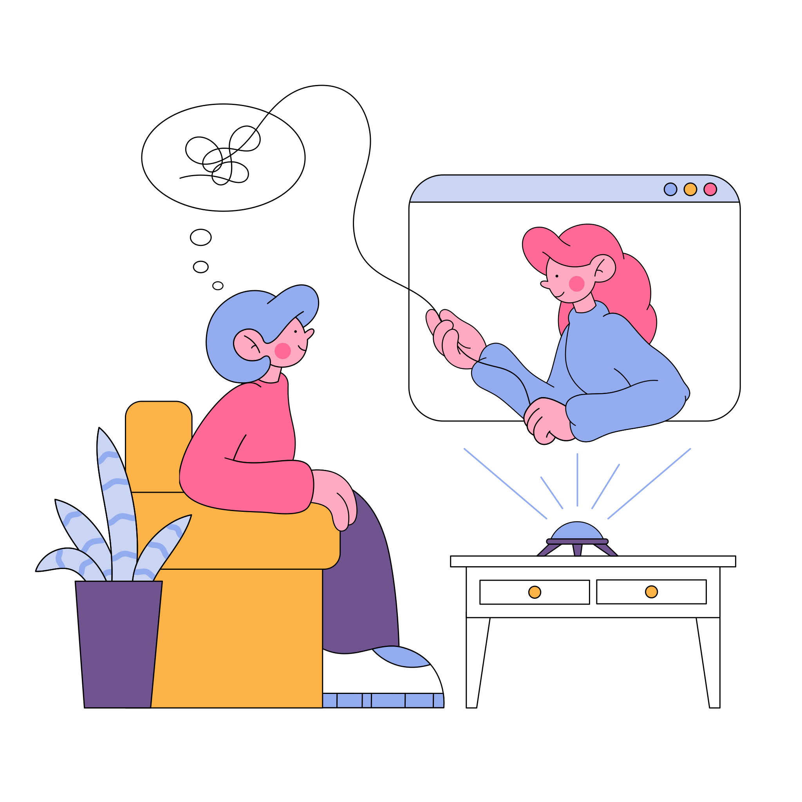

Está em busca de um(a) psicólogo(a)?

Aqui você pode agendar uma consulta de forma prática e rápida. O atendimento é online!
Agendar consulta
Psicóloga Helenice Accioly
Seja bem-vindo(a)! Estou muito feliz em recebê-lo(a).
Sei o quanto deve ter sido difícil o processo para chegar
até aqui. Espero que possamos conversar, mas antes de clicar em “agendar consulta”, saiba mais sobre
mim:
Sou Psicóloga clínica e organizacional, graduada pela Universidade Paulista - UNIP em 2014, pós-graduada em
psicopatologia e saúde pública pela Faculdade de Saúde Pública da USP e cursando especialização em Avaliação
Psicológica pelo Instituto de Pós-graduação - IPOG. Atuante há mais de 10 anos com psicologia organizacional,
atualmente Gerente de Recrutamento e Seleção em empresa privada de grande porte, com mais de 10 anos de vivência em
avaliação psicológica e orientação profissional.
Desde a minha formação, tive o prazer de acompanhar alguns pacientes no caminho em direção a uma vida mais feliz e
realizada.
Pode ser difícil lidar com as questões internas (sentimentos, medos, angústias, preocupações, indecisões) e, ao
mesmo tempo, com os acontecimentos da vida profissional, acadêmica, afetiva, social e familiar, não é mesmo? Você
não precisa lidar com tudo isso sozinho(a). Uma Psicóloga é uma profissional capacitada para fornecer um suporte
emocional adequado e auxiliá-lo(a) em busca de autoconhecimento, dessa forma, ficará mais fácil desenvolver forças
internas para lidar melhor com qualquer tipo de situação.
Serviços oferecidos
Psicoterapia
Psicoterapia
A Psicoterapia é um processo conduzido por Psicólogos com o intuito de auxiliar indivíduos a compreender e lidar
com os mais diversos tipos de situações e sentimentos vivenciados, gerar autoconhecimento, enxergar os caminhos
existentes, distinguir possibilidades para tomar decisões mais conscientes, lidar com sintomas emocionais e
comportamentais derivados de transtornos psicológicos ou não, como a ansiedade, depressão, vícios, fobias,
traumas, luto, excessos, insegurança, angústias, problemas de relacionamento, etc.
Orientação profissional
Orientação Profissional
A orientação profissional tem como intuito auxiliar pessoas a tomarem decisões relacionadas à profissão, carreira
e formação. São realizadas algumas sessões para conhecer o indivíduo, analisar o seu perfil profissional por meio
de entrevistas, aplicação de testes, conversas e, posteriormente, devolutivas para pensar em caminhos e
direcionamentos possíveis que levem a alcançar objetivos.
O intuito da orientação profissional é, também, auxiliar o paciente a desenvolver ou ampliar o autoconhecimento.
Desta forma, é possível compreender seus reais interesses, objetivos, desejos, competências comportamentais,
habilidades profissionais e características pessoais para que possa focar em áreas mais relacionadas ao seu
perfil, ou em desenvolver habilidades específicas.
Avaliacao psicologica
Avaliação Psicológica
De forma resumida, a avaliação psicológica pode ser definida como um conjunto de técnicas e procedimentos que tem
o objetivo de analisar características psicológicas de um indivíduo. O Psicólogo é o único profissional autorizado
por lei para desempenhar tal função. (CFP 007/2003).
O objetivo da avaliação psicológica é compreender, por meio de técnicas específicas validadas cientificamente,
aspectos emocionais, cognitivos, comportamentais, bem como habilidades, capacidades e traços de personalidade. Em
geral, a avaliação psicológica é utilizada para identificar se o indivíduo está apto a determinadas situações,
como realizar algum tipo de cirurgia, assumir responsabilidades como tirar a carteira de habilitação, porte de
arma, ou adoção de uma criança/adolescente, assumir um determinado cargo, etc. A avaliação psicológica pode ser
utilizada em diversos contextos, seja clínico, cirúrgico, jurídico, organizacional, entre outros.